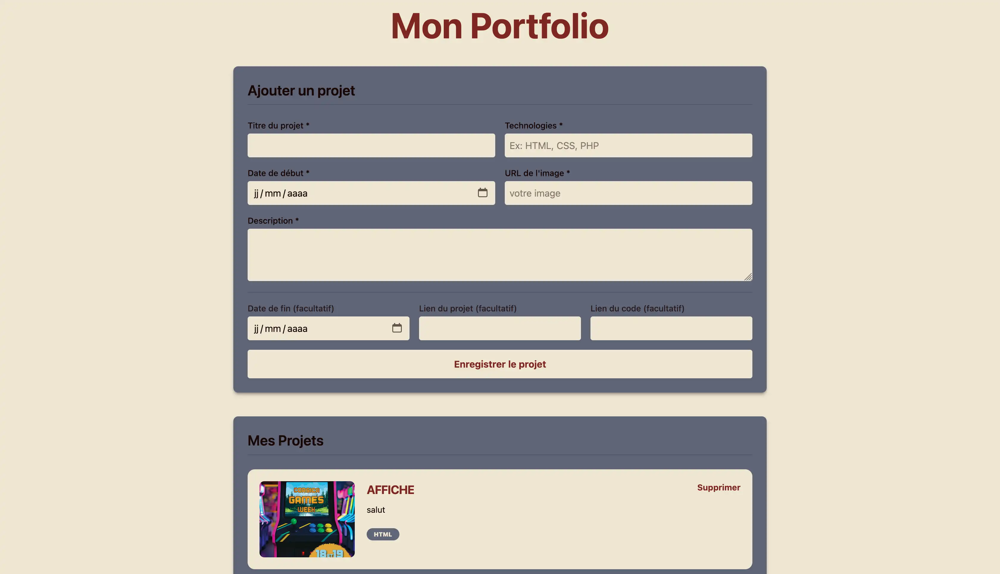
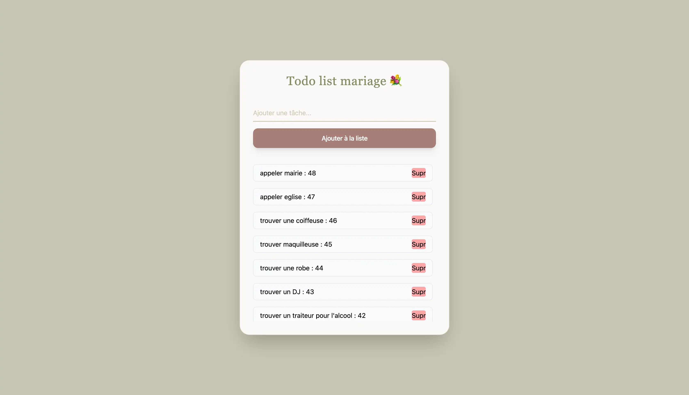
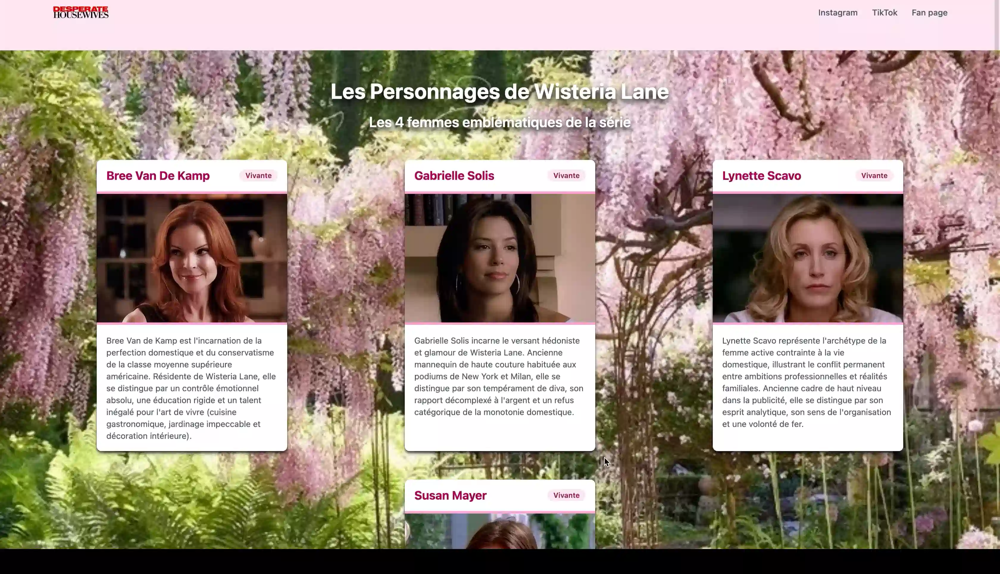
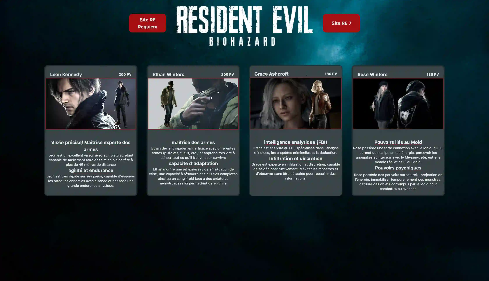
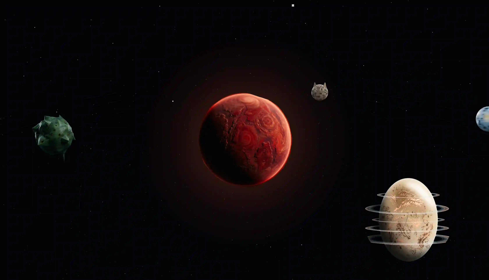

Découvrez mes derniers projets de développement, d'intégration et de bases de données.

Ce projet consistait à créer un formulaire de contact dynamique en utilisant HTML, CSS, PHP et SQL. L'objectif était de permettre aux utilisateurs de soumettre leurs informations facilement tout en garantissant la validation des données côté client et côté serveur.

Ce projet consistait à créer une application de gestion de tâches (To do List) en utilisant Tailwind CSS et JavaScript. L'objectif était de permettre l'ajout et la suppression de tâches et de marquer des tâches comme terminées.

Ce projet consistait à créer des cartes de présentation pour une série en utilisant Tailwind CSS. L'objectif était de mettre en avant les personnages de la série avec des informations clés et un design attrayant.

Dans le cadre d'un projet d'entraînement sur Tailwind CSS, j'ai conçu une série de cartes de profil (ou user cards) afin de perfectionner ma maîtrise des classes utilitaires et du design responsive.

Ce projet consistait à créer un planétarium interactif en utilisant JavaScript et des bibliothèques telles que Three.js. L'objectif était de permettre d'explorer des systèmes solaires en 3D.